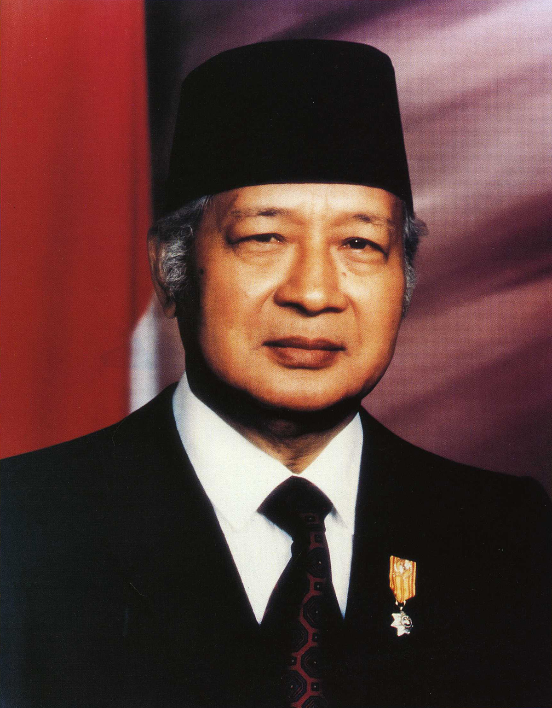

Soeharto

Lahir: 8 Juni 1921 di Desa Kemusuk, dusun terpencil, di daerah Argomulyo, Godean, sebelah barat kota Yogyakarta.
Ayah dan Ibu: Kartosudiro dan Sukirah.
→ Merupakan presiden RI Yang paling lama, menjabat selama 30 tahun.
Sebelum akhir era Orde Baru, memperoleh predikat dari MPR sebagai Bapak Pembangun Nasional.
Pendidikan
→ Di usia delapan sudah masuk ke sekolah, namun sering kali pindah-pindah.
→ Sekolah Desa Puluhan, Godean
→ SD Pedes, Kemusuk Kidul (Pindah karena pindah rumah)
→ SMP= Muhammadiyah Yogyakarta
→ Memilih untuk langsung bekerja karena tidak ada dana.
Karena tidak mendapatkan pekerjaan, ia pulang ke kampung halamannya dan diterima bekerja sebagai klerek di Volk Bank.
1940, mengawali karir militer
→ Diterima sebagai siswa di sekolah militer Gombong, Jawa Tengah.
→ Bergabung dengan pasukan kolonial Belanda, KNIL.
→ PETA bentukan Jepang.
→ Pada 5 Oktober 1945 menjadi Tentara Keamanan Rakyat/TKR.
→ Dua tahun berselang, ia menyunting gadis bernama Siti Hartinah (Sehari-hari dipanggil sebagai Ibu Tien Soeharto)
→ Melahirkan 6 anak, Siti Hardiyanti Hastuti, Sigit Harjojudanto, Bambang Trihatmodjo, Siti Hediati Herijadi, Hutomo Mandala Putra, dan Siti Hutami Endang Adiningsih.
Tercatat, Soeharto pernah memimpin perebutan Yogyakarta dari kekuasaan tentara Belanda dalam peristiwa Serangan Umum 1 Maret 1949.
→ Dipercaya menjadi pengawal panglima Besar Jenderal Soedirman.
→ Menjabat Panglima Mandala dalam kasus pembebasan Irian Barat.
Setelah itu, ia memulai karir politiknya pada pemberontakan G30S/PKI.
→ 1 Oktober 1965, Soeharto dan tokoh lainnya berusaha untuk menumpas upaya kudeta. (kemudian berhasil)
→ Menerima Surat Perintah 11 Maret 1966 (dikenal sebagai Supersemar) isinya memerintahkan Soeharto untuk mengembalikan stabilitas keamanan dan ketertiban di Indonesia.
→ Supersemar dianggap tonggak lahirnya pemerintahan Orde Baru
→ Dalam gelaran sidang MPRS pada 12 Maret 1967, Soeharto diangkat menjadi Presiden RI yang ke-2, kemudian ia menjabat selama 3 dasawarsa hingga mengundurkan diri pada 21 Mei 1998.
Setelah itu ia sering sakit.
→ Akhirnya, meninggal dunia pada 27 Januari 2008 di Rumah Sakit Pusat Pertamina Jakarta.
→ Diberangkatkan ke Jalan Cendana Jakarta → Bandara Halim
Perdanakusuma → Solo
– Tepat pada jam 10.00 WIB dimakamkan di Astana Giri Bangun, Solo, Senin.
Kembali ke halaman bab 4